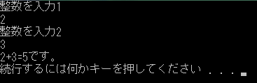

変数と型
・・・の前に前回のコードの解説
#include <iostream>
using namespace std;
void main(){
cout<<"hello_cpp"<<endl;
}
#include <iostream>
using namespace std;
の二文は文字等を表示させる「cout」を使えるようにするために書く文です。
void main()
からがプログラムの本体で、必ずmain()にしなければいけません。
後でしますがmain関数といい、プログラムはこのmain関数から始まります。
cout<<"hello_cpp"<<endl;
が画面に文字等を表示し改行する文です。
変数と型
C++での変数には何の値を保存するのかで型が決まってます。
整数ならばint型
少数ならばdouble型
文字ならばchar型
真か偽、1か0 の論理ならばbool型
・・・と決まってます。
使う型は少ないし大抵は上の4つの型ですみます。
変数の宣言
変数の初期化宣言は変数の型 識別子＝初期値 ;とします。
int num=0; //整数型変数「num」を0で初期化しました
char ch='A'; //文字型変数「ch」をAで初期化しました
double dnum=1.5; //少数型変数「dnum」を1.5で初期化しました
bool flag=true; //論理型変数「flag」をtrueで初期化しました
文字は' 'シングルクォーテーションで囲みます。
この宣言をした以降は変数名=代入値;で代入することができます。型名はいりません。
int num=0; //整数型変数「num」を0で初期化しました
num=3; //「num」に3を代入しました
標準入力
標準入力とは基本的にはキーボードのことです。
キーボードからの入力をするには「cin」を使い、
cin>>変数; でします。
変数の型に合わせた値を入力してください。
cin文が実行されると、処理が止まってキーボードからの入力を受け付けるようになります。
値を入力し、Enterを押すと変数に値が保存され、処理を続けます。
int num;
cin>>num; //numにキーボードから数値を入力します
// の後ろはコメントで処理には影響を与えません。
これで基本の 入力→変数に保存し演算→出力 ができるようになりました。
足し算をして見ましょう。
実行すると止まって数値を入力できるようになります。
数値を入れたら、エンターキ−を押します（これを二回繰り返す）
すると足し算され、表示されます。
#include <iostream>
using namespace std;
void main(){
int num1;
int num2;
cout<<"整数を入力1"<<endl;
cin>>num1;
cout<<"整数を入力2"<<endl;
cin>>num2;
cout<<num1<<"+"<<num2<<"="<<num1+num2<<"です。"<<endl;
}
結果::

C++の構文は最後に ; セミコロンをつけます。
セミコロンをつけないと構文エラーになります。
注目すべきは最後の出力の文です。
変数を画面に出力するにはcout<<num1のようにします。
coutは<<でいくつでも連結できます。
四則演算(+,-,*,/)等の式を書けば演算された結果が表示されます。
文字列は "" ダブルクォーテーションで はさみます
endl;が改行を表します。
BASICが基本になります。
そちらを先に理解しておくと後がわかりやすいです。
BASIC講座